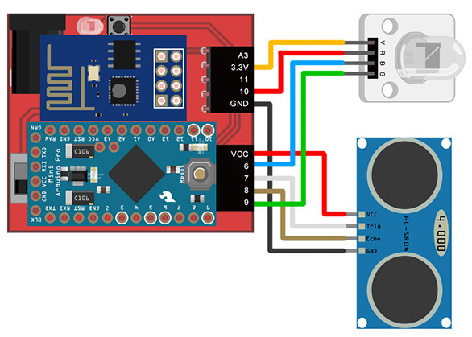
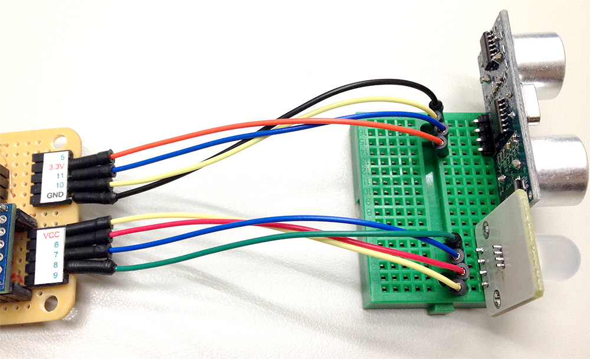
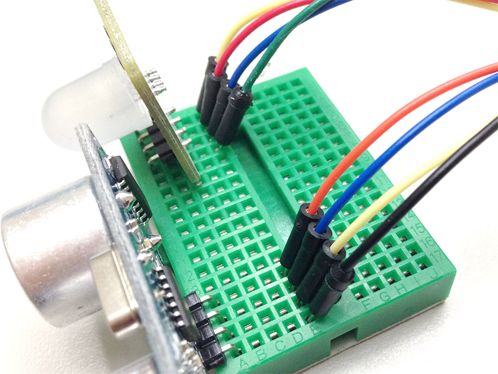

範例教學 8：超音波傳感器控制三色 LED 燈
當我們由上一個範例學會了用超音波傳感器控制 LED 燈之後，這個範例應該就輕鬆不少，這個範例最主要是希望能藉由三色 LED 燈顏色上的變化，對應距離的改變，如此一來我們就可以藉由燈號來判斷距離。
範例影片展示
接線與實作
1. 接上超音波傳感器與三色 LED 燈
雖然超音波傳感器與三色 LED 可以分別用 webduino 的兩個排插來接，但因為體積的關係，所以我們必須要用到麵包板和電線，用電線引出腳位，把超音波傳感器的 VCC 接在 3.3v，Trig 接在 11，Echo 接在 10，GND 就接在 GND 的腳位，三色 LED 的 VCC 接在 VCC 的腳位，紅色 R 接 6，藍色 B 接 7，綠色 G 接 8。

2. 完成後的實際長相
因為超音波傳感器和三色 LED 在實際的接線會朝外，所以實際的照片電線會有反轉的情形，不要接錯了。



範例解析 (快速體驗、jsbin 範例、檢查連線狀態)
一開始要先引入相關的 js 與 WebComponents，因為這個範例會用到超音波傳感器和三色 LED 這兩個傳感器，所以必須要引入這兩個元件的 WebComponent：wa-ultrasonic、wa-rgbled。
<script src="https://webduino.io/components/webcomponentsjs/webcomponents.js"></script>
<link rel='import' href='https://webduino.io/components/webduino/web-arduino.html' />
<link rel='import' href='https://webduino.io/components/webduino/wa-ultrasonic.html' />
<link rel='import' href='https://webduino.io/components/webduino/wa-rgbled.html' />
HTML 裡頭放上一個文字說明現在幾公分，同時用一個 div 來顯示顏色，凸顯三色 LED 燈與網頁是顯示同樣的顏色。
<p id='show'></p>
<div id="color"></div>
<web-arduino id='board' device="你的 device 名稱">
<wa-ultrasonic id='ultrasonic' trig='11' echo='10'></wa-ultrasonic>
<wa-rgbled id='rgb' red='6' blue='7' green='8'></wa-rgbled>
</web-arduino>
稍微調整一下 CSS。
#color {
width: 100%;
max-width: 250px;
height:100px;
border:1px solid #000;
background:#000;
margin-top: 15px;
margin-left: 5px;
}
#show {
font-size: 30px;
}
#show::before {
content: '距離: ';
}
#show::after {
content: ' cm';
}
和上一個範例「利用超音波傳感器控制 LED」燈一樣，在 javascript 裡頭加入判斷式，當距離在某個區間的時候，利用三色 LED 的 setColor api 來調整出特定的顏色，這個範例只秀出三種顏色，你也可以利用 setColor，做出各種不同距離對應的各種不同顏色喔！
window.addEventListener('WebComponentsReady', function () {
var board = document.getElementById('board');
board.on('ready',function() {
var ultrasonic = document.getElementById('ultrasonic'),
show = document.getElementById('show'),
color = document.getElementById('color'),
rgb = document.getElementById('rgb');
ultrasonic.ping(function (cm) {
show.innerHTML = cm;
if (cm < 10) {
rgb.setColor(255, 0, 0); // red , green , blue
color.style.backgroundColor = 'rgba(255, 0, 0, 255)';
} else if (cm > 10 && cm < 20) {
rgb.setColor(0, 255, 0); // red , green , blue
color.style.backgroundColor = 'rgba(0, 255, 0, 255)';
} else {
rgb.setColor(0, 0, 255); // red , green , blue
color.style.backgroundColor = 'rgba(0, 0, 255, 255)';
}
}, 1000);
});
}, false);
如果還有不清楚的，不妨利用這個 快速體驗範例，填入自己 Webduino 開發板的 device 名稱，按下設定，訊息處出現 ready 的話，就可以開始利用超音波傳感器感測不同的距離，亮起不同顏色的光，亦或是也可以參考這個 jsbin 範例，實際在上面填入 device 名稱並且修改體驗相關效果。